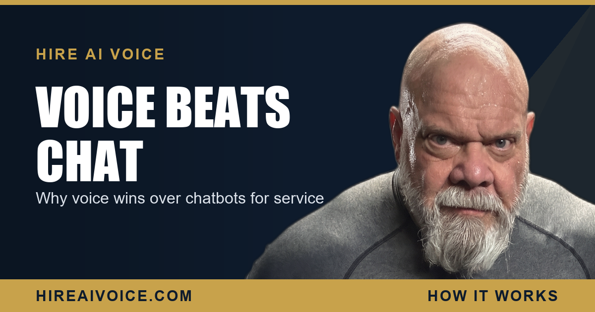

AI Voice vs Chatbots: Why Voice Wins for Service Businesses

The Short Version
- A chatbot is a text widget on a website. An AI voice agent answers your phone. For service businesses, those are not the same fight.
- Your customers call, they do not type. A burst pipe at 9 PM makes someone grab the phone, not open a laptop to a chat box.
- Voice meets the customer where the urgent intent actually is. A chatbot only catches the small slice already on your website and willing to type.
- On reach, intent, conversion, and the emergency job, voice wins for phone-driven trades. A 24/7 AI voice agent is the front door.
What Is the Difference Between an AI Voice Agent and a Chatbot?
A chatbot is a text widget that lives on your website, and an AI voice agent answers your phone. The chatbot only works if someone is on the page, sees the little bubble, and decides to type into it. The voice agent picks up the phone the instant it rings and holds a real spoken conversation, 24 hours a day. They sound similar because both say "AI," but for a service business in Santa Clarita or Los Angeles County they are not the same tool at all.
The question is not which technology is more impressive. It is where your customers actually are when they need you, and how they choose to reach out. For the trades, that answer is almost always the same: they call.
Why Do Service Customers Call Instead of Typing?
Because the problem is urgent and physical. A burst pipe, a dead AC unit in July, a tooth that just cracked, a garage door stuck halfway, these are not problems people research by typing into a chat window. They grab the phone. Calling feels faster, it feels more certain, and it is how people have always reached a plumber, an HVAC company, or an agent. The phone is the muscle memory.
A chatbot assumes the opposite. It assumes the customer is calm, sitting at a computer, browsing your website, and willing to type out their problem one message at a time and wait for a reply. That describes a tiny fraction of the people who need a service business, and almost none of the ones with money-now urgency.
A chatbot sits on a website nobody is on at 9 PM. The phone is ringing.
Which One Reaches More Customers?
Voice, by a wide margin, because the phone is the channel people already use. A chatbot's entire reach is capped by your website traffic. Before anyone can even see the chat bubble, they have to find your site, land on the right page, and still be there when a question hits. Every step loses people. The chatbot is fishing in a small pond, and only when someone happens to be standing at the water.
The phone has no such ceiling. It rings from your Google listing, from a referral, from a yard sign, from an old customer who saved your number. The caller does not have to be anywhere near a website. That is the difference between a tool that catches a fraction of one traffic source and a tool that catches every person who picks up the phone to find you.
Which One Has Higher Intent?
The caller, every time. Someone who dials your number has already decided they want this fixed and they are ready to book. That is the highest-intent moment a service business ever gets. A website visitor poking at a chatbot might be comparing three companies, might be a tire-kicker, might be a job seeker, might be a salesperson. The phone filters for people who mean it.
This is why the conversion math tips so hard toward voice. A chatbot has to first attract someone to the site, then convince them to type, then keep them engaged long enough to capture a name and a need. A caller skips all of that. They are already in the funnel at the bottom, and an AI voice agent just has to answer and book.
Can a Chatbot Handle an Emergency Job?
Not well, and the emergency job is where the real money is. Emergencies do not happen at a desk during business hours. They happen at 9 PM, on a Saturday, in the dark, when the customer is panicked and away from a computer. In that moment, nobody is opening a laptop to find your website and type into a chat box. They are calling the first three names that come up until a human answers.
That is exactly the scenario a chatbot cannot serve and a voice agent owns. The customer with the flooded kitchen at 9 PM does not get your voicemail and does not hunt for your chat widget. They get a warm, instant conversation and a booked appointment, while your competitor's phone rings into the void. This is the whole point of an AI receptionist that never sleeps: it answers the call that decides the job.
Should You Use Voice, Chat, or Both?
Start with voice. It is the front door for a phone-driven business. For trades and home services, the phone is where the leads and the urgency live, so a 24/7 AI voice agent fixes the biggest leak first. A website chatbot is not useless, it can serve the smaller share of customers who genuinely prefer to type. But it should never be the front door, and it should never be the thing you fix before the phone.
If you understand how AI voice agents actually work, the choice is clear. The voice agent greets the caller by your business name, answers their questions, qualifies the job, books the appointment, and follows up after, all on the channel your customers already chose. Add a chatbot later if you want. Win the phone first.
What to Do This Week
You do not need to pick between two pieces of software. You need to put coverage on the channel that actually drives your revenue. Three moves:
1. Be honest about how your leads come in. For most service businesses, it is the phone, by a landslide. That is where your AI dollars belong first.
2. Put a 24/7 AI voice agent on the phone. It answers every call, qualifies the job, and books it, so no caller ever hits voicemail and calls the next company.
3. Treat chat as an add-on, not the answer. A website bot can catch the few who prefer to type, but it will never carry a phone-driven business.
The businesses winning in Santa Clarita and LA County are not the ones with the slickest chat widget. They are the ones who answer the phone first, every time. Voice is the channel. Own it.
Win the Phone, Not the Chat Box
Our AI voice agent answers every call 24/7, books the job, and follows up automatically. Live in 72 hours. $297/month, no contracts. Or call Sarah, our live agent, and hear it yourself.